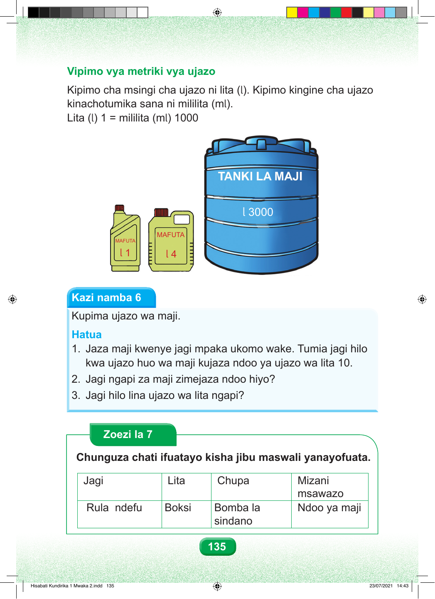

Vipimo vya metriki vya ujazo Kipimo cha msingi cha ujazo ni lita (l). Kipimo kingine cha ujazo kinachotumika sana ni mililita (ml). Lita (l) 1 = mililita (ml) 1000 l 3000 MAFUTA MAFUTA l 1 l 4 Kazi namba 6 Kupima ujazo wa maji. Hatua 1. Jaza maji kwenye jagi mpaka ukomo wake. Tumia jagi hilo kwa ujazo huo wa maji kujaza ndoo ya ujazo wa lita 10. 2. Jagi ngapi za maji zimejaza ndoo hiyo? 3. Jagi hilo lina ujazo wa lita ngapi? Zoezi la 7 Chunguza chati ifuatayo kisha jibu maswali yanayofuata. Jagi Lita Chupa Mizani msawazo Rula ndefu Boksi Bomba la Ndoo ya maji sindano 135 Hisabati Kundirika 1 Mwaka 2.indd 135 23/07/2021 14:43